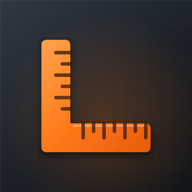

Mezuro
About Mezuro
25 construction calculators for concrete, brick and block, paint, drywall, tile, roofing, landscaping, decks, fences, stairs and framing, in feet and inches or metres. Every result lists what to buy, rounded up, with your own prices, and calculations can be saved to projects and shared as estimates. Results are estimates: check quantities with your supplier, and anything structural with a qualified professional. No account: your projects stay on your phone.
Support
Questions, ideas or a problem with Mezuro? Write to apexfordinith@gmail.com.